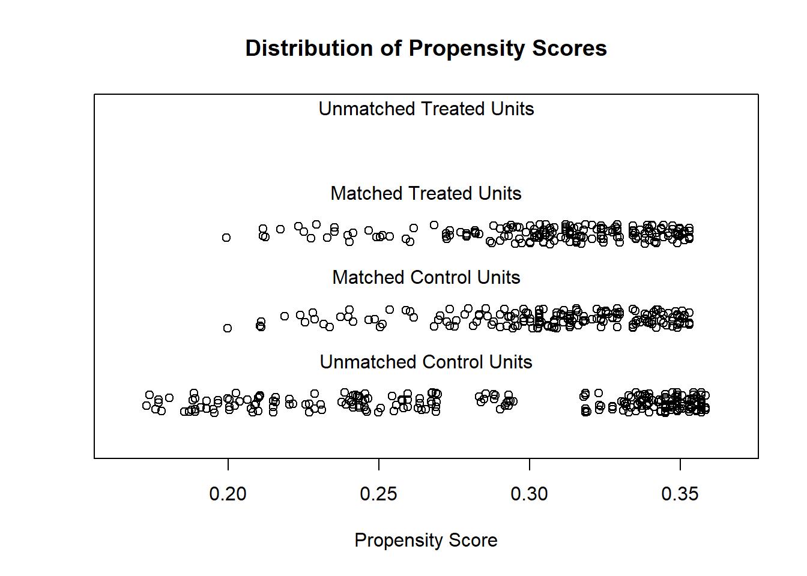
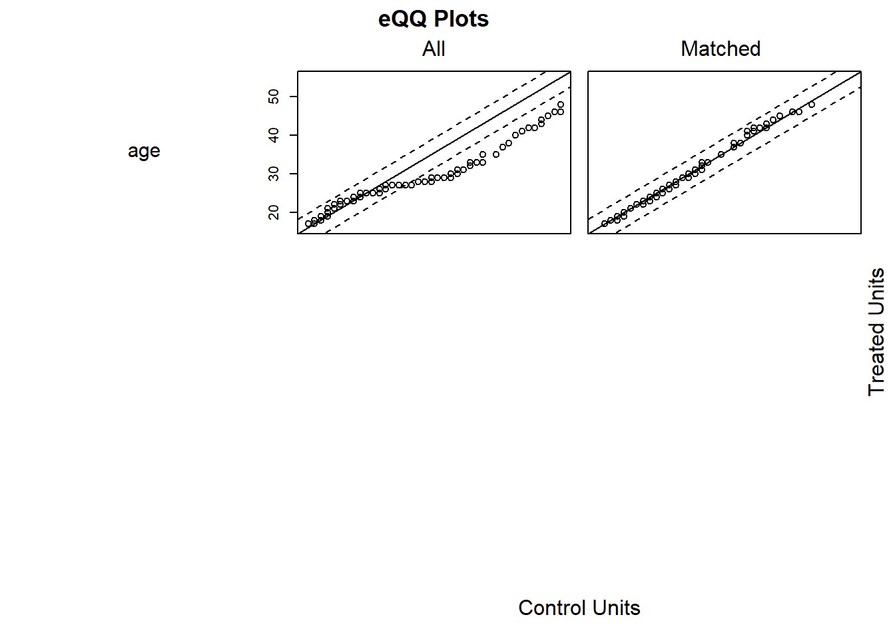
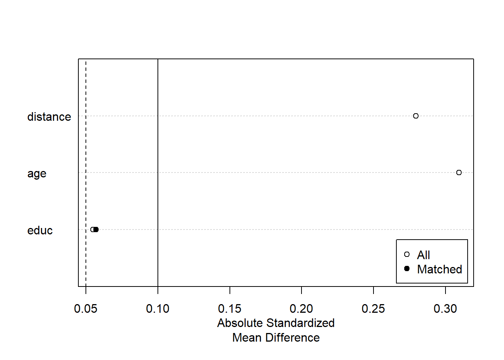

31.1 Selection on Observables
31.1.1 MatchIt
Procedure typically involves (proposed by Noah Freifer using MatchIt)
- planning
- matching
- checking (balance)
- estimating the treatment effect
examine treat on re78
- Planning
select type of effect to be estimated (e.g., mediation effect, conditional effect, marginal effect)
select the target population
select variables to match/balance (Austin 2011) (T. J. VanderWeele 2019)
- Check Initial Imbalance
# No matching; constructing a pre-match matchit object
m.out0 <- matchit(
formula(treat ~ age + educ + race
+ married + nodegree + re74 + re75, env = lalonde),
data = data.frame(lalonde),
method = NULL,
# assess balance before matching
distance = "glm" # logistic regression
)
# Checking balance prior to matching
summary(m.out0)- Matching
# 1:1 NN PS matching w/o replacement
m.out1 <- matchit(treat ~ age + educ,
data = lalonde,
method = "nearest",
distance = "glm")
m.out1
#> A matchit object
#> - method: 1:1 nearest neighbor matching without replacement
#> - distance: Propensity score
#> - estimated with logistic regression
#> - number of obs.: 614 (original), 370 (matched)
#> - target estimand: ATT
#> - covariates: age, educ- Check balance
Sometimes you have to make trade-off between balance and sample size.
# Checking balance after NN matching
summary(m.out1, un = FALSE)
#>
#> Call:
#> matchit(formula = treat ~ age + educ, data = lalonde, method = "nearest",
#> distance = "glm")
#>
#> Summary of Balance for Matched Data:
#> Means Treated Means Control Std. Mean Diff. Var. Ratio eCDF Mean
#> distance 0.3080 0.3077 0.0094 0.9963 0.0033
#> age 25.8162 25.8649 -0.0068 1.0300 0.0050
#> educ 10.3459 10.2865 0.0296 0.5886 0.0253
#> eCDF Max Std. Pair Dist.
#> distance 0.0432 0.0146
#> age 0.0162 0.0597
#> educ 0.1189 0.8146
#>
#> Sample Sizes:
#> Control Treated
#> All 429 185
#> Matched 185 185
#> Unmatched 244 0
#> Discarded 0 0
# examine visually
plot(m.out1, type = "jitter", interactive = FALSE)

Try Full Match (i.e., every treated matches with one control, and every control with one treated).
# Full matching on a probit PS
m.out2 <- matchit(treat ~ age + educ,
data = lalonde,
method = "full",
distance = "glm",
link = "probit")
m.out2
#> A matchit object
#> - method: Optimal full matching
#> - distance: Propensity score
#> - estimated with probit regression
#> - number of obs.: 614 (original), 614 (matched)
#> - target estimand: ATT
#> - covariates: age, educChecking balance again
# Checking balance after full matching
summary(m.out2, un = FALSE)
#>
#> Call:
#> matchit(formula = treat ~ age + educ, data = lalonde, method = "full",
#> distance = "glm", link = "probit")
#>
#> Summary of Balance for Matched Data:
#> Means Treated Means Control Std. Mean Diff. Var. Ratio eCDF Mean
#> distance 0.3082 0.3081 0.0023 0.9815 0.0028
#> age 25.8162 25.8035 0.0018 0.9825 0.0062
#> educ 10.3459 10.2315 0.0569 0.4390 0.0481
#> eCDF Max Std. Pair Dist.
#> distance 0.0270 0.0382
#> age 0.0249 0.1110
#> educ 0.1300 0.9805
#>
#> Sample Sizes:
#> Control Treated
#> All 429. 185
#> Matched (ESS) 145.23 185
#> Matched 429. 185
#> Unmatched 0. 0
#> Discarded 0. 0
plot(summary(m.out2))
Exact Matching
# Full matching on a probit PS
m.out3 <-
matchit(
treat ~ age + educ,
data = lalonde,
method = "exact"
)
m.out3
#> A matchit object
#> - method: Exact matching
#> - number of obs.: 614 (original), 332 (matched)
#> - target estimand: ATT
#> - covariates: age, educSubclassfication
m.out4 <- matchit(
treat ~ age + educ,
data = lalonde,
method = "subclass"
)
m.out4
#> A matchit object
#> - method: Subclassification (6 subclasses)
#> - distance: Propensity score
#> - estimated with logistic regression
#> - number of obs.: 614 (original), 614 (matched)
#> - target estimand: ATT
#> - covariates: age, educ
# Or you can use in conjunction with "nearest"
m.out4 <- matchit(
treat ~ age + educ,
data = lalonde,
method = "nearest",
option = "subclass"
)
m.out4
#> A matchit object
#> - method: 1:1 nearest neighbor matching without replacement
#> - distance: Propensity score
#> - estimated with logistic regression
#> - number of obs.: 614 (original), 370 (matched)
#> - target estimand: ATT
#> - covariates: age, educOptimal Matching
m.out5 <- matchit(
treat ~ age + educ,
data = lalonde,
method = "optimal",
ratio = 2
)
m.out5
#> A matchit object
#> - method: 2:1 optimal pair matching
#> - distance: Propensity score
#> - estimated with logistic regression
#> - number of obs.: 614 (original), 555 (matched)
#> - target estimand: ATT
#> - covariates: age, educGenetic Matching
m.out6 <- matchit(
treat ~ age + educ,
data = lalonde,
method = "genetic"
)
m.out6
#> A matchit object
#> - method: 1:1 genetic matching without replacement
#> - distance: Propensity score
#> - estimated with logistic regression
#> - number of obs.: 614 (original), 370 (matched)
#> - target estimand: ATT
#> - covariates: age, educ- Estimating the Treatment Effect
# get matched data
m.data1 <- match.data(m.out1)
head(m.data1)
#> treat age educ race married nodegree re74 re75 re78 distance
#> NSW1 1 37 11 black 1 1 0 0 9930.0460 0.2536942
#> NSW2 1 22 9 hispan 0 1 0 0 3595.8940 0.3245468
#> NSW3 1 30 12 black 0 0 0 0 24909.4500 0.2881139
#> NSW4 1 27 11 black 0 1 0 0 7506.1460 0.3016672
#> NSW5 1 33 8 black 0 1 0 0 289.7899 0.2683025
#> NSW6 1 22 9 black 0 1 0 0 4056.4940 0.3245468
#> weights subclass
#> NSW1 1 1
#> NSW2 1 98
#> NSW3 1 109
#> NSW4 1 120
#> NSW5 1 131
#> NSW6 1 142library("lmtest") #coeftest
library("sandwich") #vcovCL
# imbalance matched dataset
fit1 <- lm(re78 ~ treat + age + educ ,
data = m.data1,
weights = weights)
coeftest(fit1, vcov. = vcovCL, cluster = ~subclass)
#>
#> t test of coefficients:
#>
#> Estimate Std. Error t value Pr(>|t|)
#> (Intercept) -174.902 2445.013 -0.0715 0.943012
#> treat -1139.085 780.399 -1.4596 0.145253
#> age 153.133 55.317 2.7683 0.005922 **
#> educ 358.577 163.860 2.1883 0.029278 *
#> ---
#> Signif. codes: 0 '***' 0.001 '**' 0.01 '*' 0.05 '.' 0.1 ' ' 1treat coefficient = estimated ATT
# balance matched dataset
m.data2 <- match.data(m.out2)
fit2 <- lm(re78 ~ treat + age + educ ,
data = m.data2, weights = weights)
coeftest(fit2, vcov. = vcovCL, cluster = ~subclass)
#>
#> t test of coefficients:
#>
#> Estimate Std. Error t value Pr(>|t|)
#> (Intercept) 2151.952 3141.152 0.6851 0.49355
#> treat -725.184 703.297 -1.0311 0.30289
#> age 120.260 53.933 2.2298 0.02612 *
#> educ 175.693 241.694 0.7269 0.46755
#> ---
#> Signif. codes: 0 '***' 0.001 '**' 0.01 '*' 0.05 '.' 0.1 ' ' 1When reporting, remember to mention
- the matching specification (method, and additional options)
- the distance measure (e.g., propensity score)
- other methods, and rationale for the final chosen method.
- balance statistics of the matched dataset.
- number of matched, unmatched, discarded
- estimation method for treatment effect.
31.1.2 designmatch
This package includes
distmatchoptimal distance matchingbmatchoptimal bipartile matchingcardmatchoptimal cardinality matchingprofmatchoptimal profile matchingnmatchoptimal nonbipartile matching
31.1.3 MatchingFrontier
As mentioned in MatchIt, you have to make trade-off (also known as bias-variance trade-off) between balance and sample size. An automated procedure to optimize this trade-off is implemented in MatchingFrontier (G. King, Lucas, and Nielsen 2017), which solves this joint optimization problem.
Following MatchingFrontier guide
# library(devtools)
# install_github('ChristopherLucas/MatchingFrontier')
library(MatchingFrontier)
data("lalonde")
# choose var to match on
match.on <-
colnames(lalonde)[!(colnames(lalonde) %in% c('re78', 'treat'))]
match.on
# Mahanlanobis frontier (default)
mahal.frontier <-
makeFrontier(
dataset = lalonde,
treatment = "treat",
match.on = match.on
)
mahal.frontier
# L1 frontier
L1.frontier <-
makeFrontier(
dataset = lalonde,
treatment = 'treat',
match.on = match.on,
QOI = 'SATT',
metric = 'L1',
ratio = 'fixed'
)
L1.frontier
# estimate effects along the frontier
# Set base form
my.form <-
as.formula(re78 ~ treat + age + black + education
+ hispanic + married + nodegree + re74 + re75)
# Estimate effects for the mahalanobis frontier
mahal.estimates <-
estimateEffects(
mahal.frontier,
're78 ~ treat',
mod.dependence.formula = my.form,
continuous.vars = c('age', 'education', 're74', 're75'),
prop.estimated = .1,
means.as.cutpoints = TRUE
)
# Estimate effects for the L1 frontier
L1.estimates <-
estimateEffects(
L1.frontier,
're78 ~ treat',
mod.dependence.formula = my.form,
continuous.vars = c('age', 'education', 're74', 're75'),
prop.estimated = .1,
means.as.cutpoints = TRUE
)
# Plot covariates means
# plotPrunedMeans()
# Plot estimates (deprecated)
# plotEstimates(
# L1.estimates,
# ylim = c(-10000, 3000),
# cex.lab = 1.4,
# cex.axis = 1.4,
# panel.first = grid(NULL, NULL, lwd = 2,)
# )
# Plot estimates
plotMeans(L1.frontier)
# parallel plot
parallelPlot(
L1.frontier,
N = 400,
variables = c('age', 're74', 're75', 'black'),
treated.col = 'blue',
control.col = 'gray'
)
# export matched dataset
# take 400 units
matched.data <- generateDataset(L1.frontier, N = 400) 31.1.4 Propensity Scores
Even though I mention the propensity scores matching method here, it is no longer recommended to use such method in research and publication (G. King and Nielsen 2019) because it increases
imbalance
inefficiency
model dependence: small changes in the model specification lead to big changes in model results
bias
(Abadie and Imbens 2016)note
The initial estimation of the propensity score influences the large sample distribution of the estimators.
Adjustments are made to the large sample variances of these estimators for both ATE and ATT.
The adjustment for the ATE estimator is either negative or zero, indicating greater efficiency when matching on an estimated propensity score versus the true score in large samples.
For the ATET estimator, the sign of the adjustment depends on the data generating process. Neglecting the estimation error in the propensity score can lead to inaccurate confidence intervals for the ATT estimator, making them either too large or too small.
PSM tries to accomplish complete randomization while other methods try to achieve fully blocked. Hence, you probably better off use any other methods.
Propensity is “the probability of receiving the treatment given the observed covariates.” (Rosenbaum and Rubin 1985)
Equivalently, it can to understood as the probability of being treated.
\[ e_i (X_i) = P(T_i = 1 | X_i) \]
Estimation using
logistic regression
Non parametric methods:
boosted CART
generalized boosted models (gbm)
Steps by Gary King’s slides
reduce k elements of X to scalar
\(\pi_i \equiv P(T_i = 1|X) = \frac{1}{1+e^{X_i \beta}}\)
Distance (\(X_c, X_t\)) = \(|\pi_c - \pi_t|\)
match each treated unit to the nearest control unit
control units: not reused; pruned if unused
prune matches if distances > caliper
In the best case scenario, you randomly prune, which increases imbalance
Other methods dominate because they try to match exactly hence
\(X_c = X_t \to \pi_c = \pi_t\) (exact match leads to equal propensity scores) but
\(\pi_c = \pi_t \nrightarrow X_c = X_t\) (equal propensity scores do not necessarily lead to exact match)
Notes:
Do not include/control for irrelevant covariates because it leads your PSM to be more random, hence more imbalance
Do not include for (Bhattacharya and Vogt 2007) instrumental variable in the predictor set of a propensity score matching estimator. More generally, using variables that do not control for potential confounders, even if they are predictive of the treatment, can result in biased estimates
What you left with after pruning is more important than what you start with then throw out.
Diagnostics:
balance of the covariates
no need to concern about collinearity
can’t use c-stat or stepwise because those model fit stat do not apply
Application
Finance:
- Hirtle, Kovner, and Plosser (2020) examine the impact of bank supervision on risk, profitability, and growth, using a matched sample approach to show that increased supervisory attention leads to less risky loan portfolios and reduced volatility without compromising profitability or growth.
31.1.5 Mahalanobis Distance
Approximates fully blocked experiment
Distance \((X_c,X_t)\) = \(\sqrt{(X_c - X_t)'S^{-1}(X_c - X_t)}\)
where \(S^{-1}\) standardize the distance
In application we use Euclidean distance.
Prune unused control units, and prune matches if distance > caliper
31.1.6 Coarsened Exact Matching
Steps from Gray King’s slides International Methods Colloquium talk 2015
Temporarily coarsen \(X\)
Apply exact matching to the coarsened \(X, C(X)\)
sort observation into strata, each with unique values of \(C(X)\)
prune stratum with 0 treated or 0 control units
Pass on original (uncoarsened) units except those pruned
Properties:
Monotonic imbalance bounding (MIB) matching method
- maximum imbalance between the treated and control chosen ex ante
meets congruence principle
robust to measurement error
can be implemented with multiple imputation
works well for multi-category treatments
Assumptions:
- Ignorability (i.e., no omitted variable bias)
More detail in (Iacus, King, and Porro 2012)
Example by package’s authors
library(cem)
data(LeLonde)
Le <- data.frame(na.omit(LeLonde)) # remove missing data
# treated and control groups
tr <- which(Le$treated==1)
ct <- which(Le$treated==0)
ntr <- length(tr)
nct <- length(ct)
# unadjusted, biased difference in means
mean(Le$re78[tr]) - mean(Le$re78[ct])
#> [1] 759.0479
# pre-treatment covariates
vars <-
c(
"age",
"education",
"black",
"married",
"nodegree",
"re74",
"re75",
"hispanic",
"u74",
"u75",
"q1"
)
# overall imbalance statistics
imbalance(group=Le$treated, data=Le[vars]) # L1 = 0.902
#>
#> Multivariate Imbalance Measure: L1=0.902
#> Percentage of local common support: LCS=5.8%
#>
#> Univariate Imbalance Measures:
#>
#> statistic type L1 min 25% 50% 75%
#> age -0.252373042 (diff) 5.102041e-03 0 0 0.0000 -1.0000
#> education 0.153634710 (diff) 8.463851e-02 1 0 1.0000 1.0000
#> black -0.010322734 (diff) 1.032273e-02 0 0 0.0000 0.0000
#> married -0.009551495 (diff) 9.551495e-03 0 0 0.0000 0.0000
#> nodegree -0.081217371 (diff) 8.121737e-02 0 -1 0.0000 0.0000
#> re74 -18.160446880 (diff) 5.551115e-17 0 0 284.0715 806.3452
#> re75 101.501761679 (diff) 5.551115e-17 0 0 485.6310 1238.4114
#> hispanic -0.010144756 (diff) 1.014476e-02 0 0 0.0000 0.0000
#> u74 -0.045582186 (diff) 4.558219e-02 0 0 0.0000 0.0000
#> u75 -0.065555292 (diff) 6.555529e-02 0 0 0.0000 0.0000
#> q1 7.494021189 (Chi2) 1.067078e-01 NA NA NA NA
#> max
#> age -6.0000
#> education 1.0000
#> black 0.0000
#> married 0.0000
#> nodegree 0.0000
#> re74 -2139.0195
#> re75 490.3945
#> hispanic 0.0000
#> u74 0.0000
#> u75 0.0000
#> q1 NA
# drop other variables that are not pre - treatmentt matching variables
todrop <- c("treated", "re78")
imbalance(group=Le$treated, data=Le, drop=todrop)
#>
#> Multivariate Imbalance Measure: L1=0.902
#> Percentage of local common support: LCS=5.8%
#>
#> Univariate Imbalance Measures:
#>
#> statistic type L1 min 25% 50% 75%
#> age -0.252373042 (diff) 5.102041e-03 0 0 0.0000 -1.0000
#> education 0.153634710 (diff) 8.463851e-02 1 0 1.0000 1.0000
#> black -0.010322734 (diff) 1.032273e-02 0 0 0.0000 0.0000
#> married -0.009551495 (diff) 9.551495e-03 0 0 0.0000 0.0000
#> nodegree -0.081217371 (diff) 8.121737e-02 0 -1 0.0000 0.0000
#> re74 -18.160446880 (diff) 5.551115e-17 0 0 284.0715 806.3452
#> re75 101.501761679 (diff) 5.551115e-17 0 0 485.6310 1238.4114
#> hispanic -0.010144756 (diff) 1.014476e-02 0 0 0.0000 0.0000
#> u74 -0.045582186 (diff) 4.558219e-02 0 0 0.0000 0.0000
#> u75 -0.065555292 (diff) 6.555529e-02 0 0 0.0000 0.0000
#> q1 7.494021189 (Chi2) 1.067078e-01 NA NA NA NA
#> max
#> age -6.0000
#> education 1.0000
#> black 0.0000
#> married 0.0000
#> nodegree 0.0000
#> re74 -2139.0195
#> re75 490.3945
#> hispanic 0.0000
#> u74 0.0000
#> u75 0.0000
#> q1 NAautomated coarsening
mat <-
cem(
treatment = "treated",
data = Le,
drop = "re78",
keep.all = TRUE
)
#>
#> Using 'treated'='1' as baseline group
mat
#> G0 G1
#> All 392 258
#> Matched 95 84
#> Unmatched 297 174
# mat$wcoarsening by explicit user choice
# categorial variables
levels(Le$q1) # grouping option
#> [1] "agree" "disagree" "neutral"
#> [4] "no opinion" "strongly agree" "strongly disagree"
q1.grp <-
list(
c("strongly agree", "agree"),
c("neutral", "no opinion"),
c("strongly disagree", "disagree")
) # if you want ordered categories
# continuous variables
table(Le$education)
#>
#> 3 4 5 6 7 8 9 10 11 12 13 14 15
#> 1 5 4 6 12 55 106 146 173 113 19 9 1
educut <- c(0, 6.5, 8.5, 12.5, 17) # use cutpoints
mat1 <-
cem(
treatment = "treated",
data = Le,
drop = "re78",
cutpoints = list(education = educut),
grouping = list(q1 = q1.grp)
)
#>
#> Using 'treated'='1' as baseline group
mat1
#> G0 G1
#> All 392 258
#> Matched 158 115
#> Unmatched 234 143Can also use progressive coarsening method to control the number of matches.
cemcan also handle some missingness.
31.1.7 Genetic Matching
GM uses iterative checking process of propensity scores, which combines propensity scores and Mahalanobis distance.
- GenMatch (Diamond and Sekhon 2013)
GM is arguably “superior” method than nearest neighbor or full matching in imbalanced data
Use a genetic search algorithm to find weights for each covariate such that we have optimal balance.
Implementation
could use with replacement
balance can be based on
paired \(t\)-tests (dichotomous variables)
Kolmogorov-Smirnov (multinomial and continuous)
Packages
Matching
library(Matching)
data(lalonde)
attach(lalonde)
#The covariates we want to match on
X = cbind(age, educ, black, hisp, married, nodegr, u74, u75, re75, re74)
#The covariates we want to obtain balance on
BalanceMat <-
cbind(age,
educ,
black,
hisp,
married,
nodegr,
u74,
u75,
re75,
re74,
I(re74 * re75))
#
#Let's call GenMatch() to find the optimal weight to give each
#covariate in 'X' so as we have achieved balance on the covariates in
#'BalanceMat'. This is only an example so we want GenMatch to be quick
#so the population size has been set to be only 16 via the 'pop.size'
#option. This is *WAY* too small for actual problems.
#For details see http://sekhon.berkeley.edu/papers/MatchingJSS.pdf.
#
genout <-
GenMatch(
Tr = treat,
X = X,
BalanceMatrix = BalanceMat,
estimand = "ATE",
M = 1,
pop.size = 16,
max.generations = 10,
wait.generations = 1
)
#The outcome variable
Y=re78/1000
#
# Now that GenMatch() has found the optimal weights, let's estimate
# our causal effect of interest using those weights
#
mout <-
Match(
Y = Y,
Tr = treat,
X = X,
estimand = "ATE",
Weight.matrix = genout
)
summary(mout)
#
#Let's determine if balance has actually been obtained on the variables of interest
#
mb <-
MatchBalance(
treat ~ age + educ + black + hisp + married + nodegr
+ u74 + u75 + re75 + re74 + I(re74 * re75),
match.out = mout,
nboots = 500
)31.1.8 Entropy Balancing
Entropy balancing is a method for achieving covariate balance in observational studies with binary treatments.
It uses a maximum entropy reweighting scheme to ensure that treatment and control groups are balanced based on sample moments.
This method adjusts for inequalities in the covariate distributions, reducing dependence on the model used for estimating treatment effects.
Entropy balancing improves balance across all included covariate moments and removes the need for repetitive balance checking and iterative model searching.
31.1.9 Matching for high-dimensional data
One could reduce the number of dimensions using methods such as:
Lasso (Gordon et al. 2019)
Penalized logistic regression (Eckles and Bakshy 2021)
PCA (Principal Component Analysis)
Locality Preserving Projections (LPP) (S. Li et al. 2016)
Random projection
Autoencoders (Ramachandra 2018)
Additionally, one could jointly does dimension reduction while balancing the distributions of the control and treated groups (Yao et al. 2018).
31.1.10 Matching for time series-cross-section data
Examples: (Scheve and Stasavage 2012) and (Acemoglu et al. 2019)
Identification strategy:
Within-unit over-time variation
within-time across-units variation
See DID with in and out treatment condition for details of this method
31.1.11 Matching for multiple treatments
In cases where you have multiple treatment groups, and you want to do matching, it’s important to have the same baseline (control) group. For more details, see
(Zhao et al. 2021): also for continuous treatment
If you insist on using the MatchIt package, then see this answer
31.1.12 Matching for multi-level treatments
See (Yang et al. 2016)
Package in R shuyang1987/multilevelMatching on Github
31.1.13 Matching for repeated treatments
https://cran.r-project.org/web/packages/twang/vignettes/iptw.pdf
package in R twang